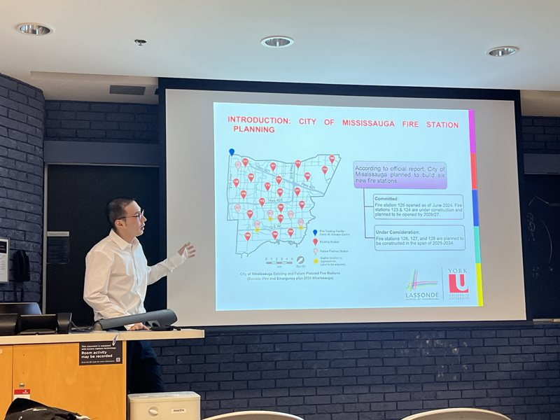
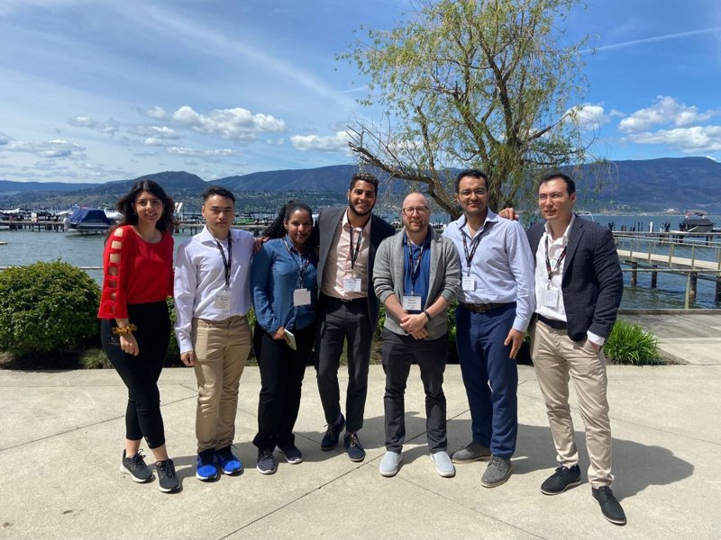
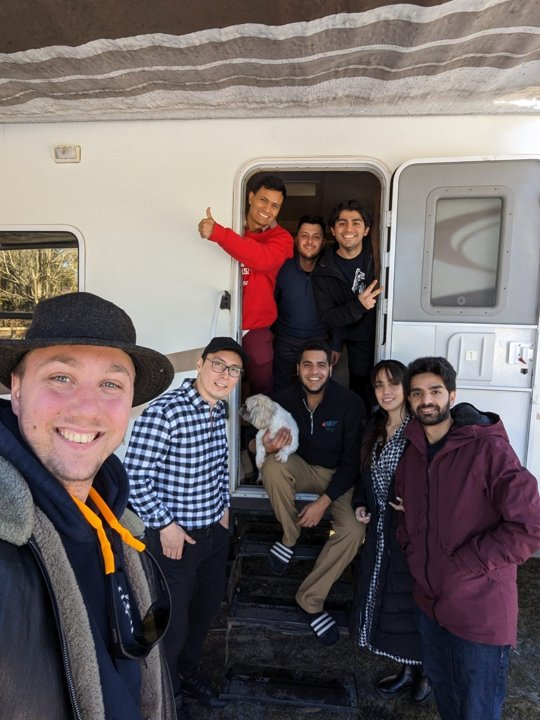
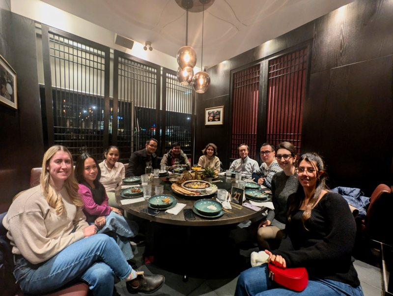
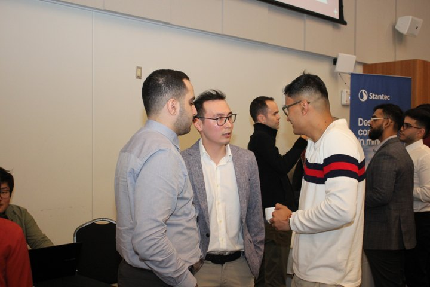
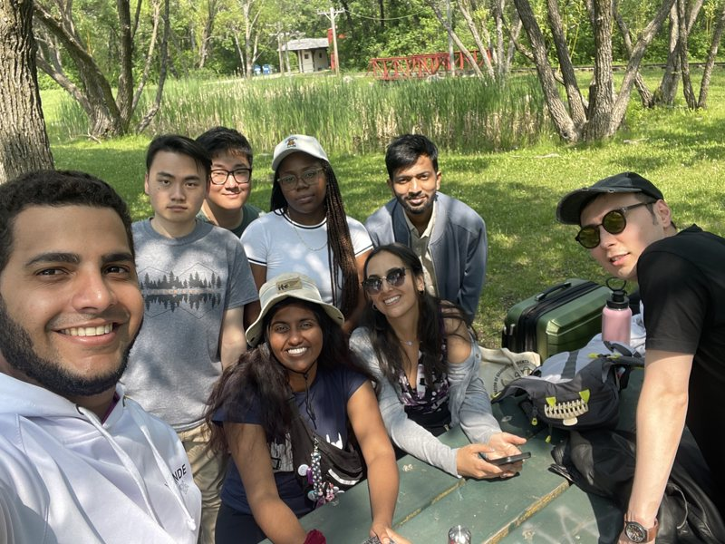
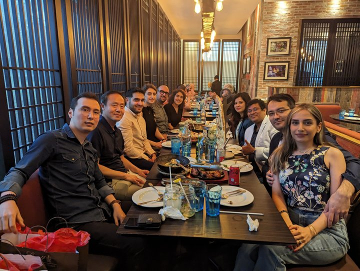

Masoud Amirdadi
Talks & Activities


CORS 2026 Conference
Kingston, ON · 2026

International Congress on Human-Computer Interaction, Optimization and Robotic Applications
Ankara, Türkiye · 2025


Canadian Transportation Research Forum Conference
Kelowna, BC · 2024


Barbecue with YorkU Graduate Friends
Toronto, ON · 2024


New Year Gathering
Toronto, ON · 2024


Civil Industry Night
Bergeron Centre, North York, ON · 2024


ITE Canada/CARSP 2023 Joint Conference
Winnipeg, MB · 2023


Ahmad and Tanvir’s Doctoral Graduation Night
Toronto, ON · 2023